🔌 LINE公式アカウントとお家専用の通知係(Worker)を用意する
設定の2番目の手順です。手順1でAnthropicのAPIキーを取得済みであることが前提です(このページの途中で使います)。ここでは、家族への通知を担当する「LINE公式アカウント」と、それを動かす「Worker(通知係のプログラム)」をご自宅専用にご用意いただきます。
※天気については設定は不要です。開発者があらかじめ用意した中継サーバーを通して取得されます(くわしくはプライバシーポリシー)。カレンダーの連携は、この手順が終わったあとの手順3で行います。
※この手順とボタン名・画面写真は、2026年9月に実際の画面で通して確認したものです。LINEやCloudflareの画面は今後変更が入ることがあります。表示が違っていても、やることは同じです。うまくいかないときは途中で構いませんので開発者までご連絡ください。
この作業で何をするか(全体像)
- LINE公式アカウントを作る(無料)
- LINE Developersでチャネルアクセストークンと「チャネルシークレット」を取得する
- Cloudflareの無料アカウントで、通知係のプログラム(Worker)を自分名義で動かす
- Workerに、取得したLINEの情報を設定する
- アプリの設定画面に、Workerのアドレスと合言葉を入力する
- お父さん・お母さんがLINEで一言送って、通知の宛先として登録する
Step 1. LINE公式アカウントを作る
- LINE Official Account Manager にアクセスし、お使いのLINEアカウントでログインします。
- 左のメニューにある 1「作成」を押し、名前を入力します(例:「〇〇家 れんらく」。ご家族しか見ないので何でも構いません)。
- 業種などを聞かれた場合は「個人」に近い項目を選んでください。
- 作成が終わると「アカウントリスト」に並びます。2作ったアカウントの名前を押すと、そのアカウントの管理画面が開きます。
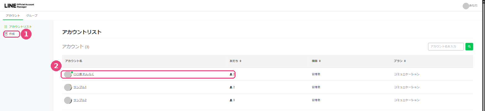
はじめての場合、この一覧は空の状態です。
Step 2. Messaging APIを有効にして、トークンを取得する
- 作成した公式アカウントの管理画面で、右上の「設定」→ 左メニューの 1「Messaging API」を開きます。
- 「Messaging APIを利用する」を有効にします。ここで自動的にLINE Developers側にも「プロバイダー」と「チャネル」が作られます。2 ステータスが「利用中」になれば成功です。
- 3「Channel secret」の文字列を「コピー」ボタンで控えておきます(これが手順4で使う「チャネルシークレット」です)。
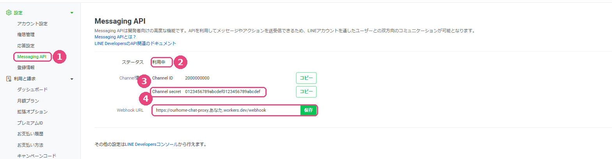
4 の「Webhook URL」は手順4の最後で使います。いまは空のままで構いません。
- つづいて LINE Developersコンソール を開き、いま作られたチャネル(公式アカウントと同じ名前です)を選びます。
- 「Messaging API設定」タブを下までスクロールし、1「チャネルアクセストークン(長期)」の欄にある「発行」を押します。表示された長い文字列をコピーし、メモ帳など安全な場所に控えておきます(これが手順4で使う「チャネルアクセストークン」です)。
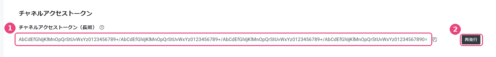
すでに発行済みの場合、ボタンは 2「再発行」に変わります。一度使い始めたあとに再発行すると、前のトークンは使えなくなり通知が止まります。
この2つ(チャネルアクセストークン・チャネルシークレット)は、LINEになりすまして通知を送るための「鍵」です。他の人に見せたり、写真に写り込んだりしないよう気をつけてください。
Step 3. Cloudflareで通知係のプログラム(Worker)を用意する
- Cloudflareのアカウント登録ページから、無料アカウントを作成します(メールアドレスとパスワードのみでOK)。
- ログイン後のダッシュボードで、左メニューの 1「Workers & Pages」を開き、右上の 2「Create application」ボタンを押します。
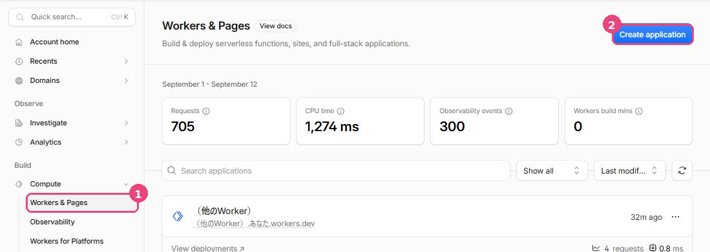
左メニューは「Build」→「Compute」の中にあります。
- 選択肢の中から 1「Start with Hello World!」を選びます。
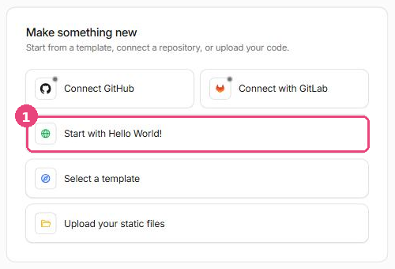
- 1「Worker name」欄に名前を入力します。名前は何でも構いません(例:
ourhome-chat-proxy)。入力すると (その名前).(あなたのサブドメイン).workers.dev という形のURLになります。
- 2「Deploy」を押します(この時点ではまだ「Hello World!」という見本のプログラムのままで大丈夫です)。
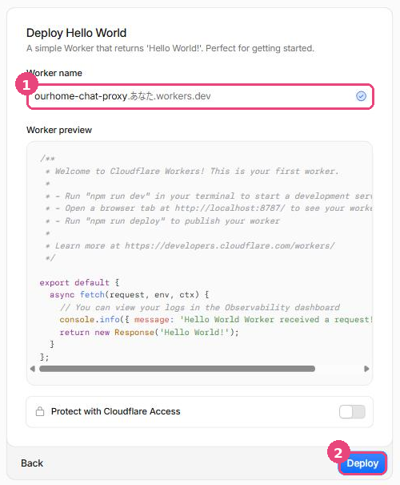
「Worker preview」に出ている見本のコードは、このあと差し替えます。
- デプロイが終わると、そのWorkerの管理画面が開きます。画面右上の 1「Edit code」を押します(次の図)。
- エディター画面が開いたら、中身の見本コードをすべて削除し、開発者から渡された
chat-proxy.js の中身をそのまま貼り付けて、画面右上の「Deploy」を押します(保存してデプロイされます)。
Step 4. Workerに設定を追加する
4-1. キーと合言葉を登録する
- 作成したWorkerの管理画面で、上部タブの「Settings」を開きます。1 が「Edit code」、2 が次で使う「Add variable」です。
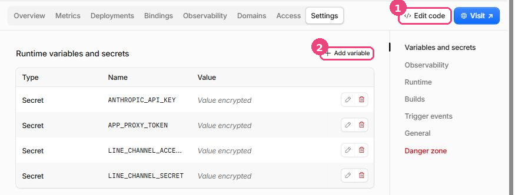
見出しは「Runtime variables and secrets」です。登録済みのものがここに並びます。
- 2「Add variable」を押すと「Add environment variable」という小さな画面が出ます。ここで以下の4つを1つずつ追加します。
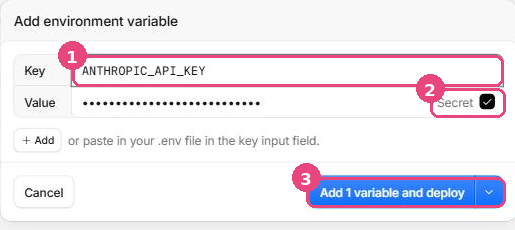
1 Key に名前、Value に値。2 「Secret」に必ずチェック。3 最後に「Add 1 variable and deploy」。
ここがいちばん間違えやすいところです。「Secret」のチェックを入れ忘れると、キーや合言葉がそのまま読める状態で保存されます。チェックを入れると、保存後は「Value encrypted」と表示され、中身は誰にも見えなくなります(ご自身にも見えません。変えたいときは上書きします)。
- 追加するのは次の4つです。
ANTHROPIC_API_KEY … これより前の手順で取得したAnthropicのAPIキーAPP_PROXY_TOKEN … アプリとWorkerだけが知っている合言葉。好きな英数字の羅列を自分で決めて入力してください(例:20文字くらいのランダムな文字列)LINE_CHANNEL_ACCESS_TOKEN … Step2で控えたチャネルアクセストークンLINE_CHANNEL_SECRET … Step2で控えたチャネルシークレット
4-2. KVストレージ(通知の順番待ち場所)を作る
お子様が押したスタンプを、LINEに届くまで一時的に置いておく場所です。左メニューから作ります。
- 左メニューの「Storage & databases」を開き、1「Workers KV」を選びます。右上の 2「Create Instance」を押します。
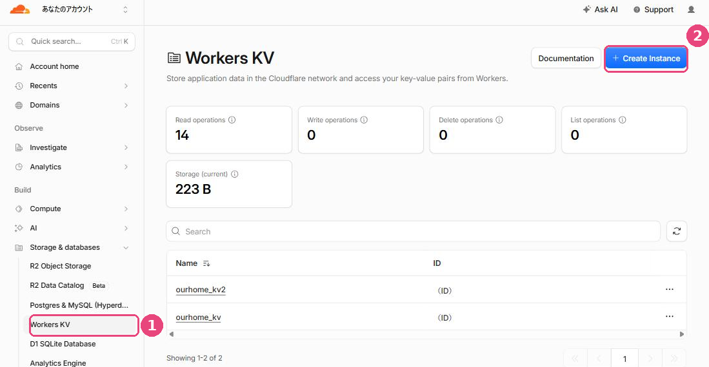
まだ何も作っていない場合、一覧は空の状態です。
- 1「Namespace name」に好きな名前を入れて(名前は何でも構いません。例:
ourhome_kv)、2「Create」を押します。
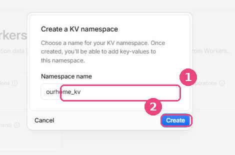
あとで選ぶだけなので、名前は覚えやすいもので大丈夫です。
4-3. WorkerとKVをつなぐ(Bindings)
作ったKVを、Workerから使えるように結びつけます。
- Workerの管理画面に戻り、1 上部タブの「Bindings」を開いて、2「Add binding」を押します。
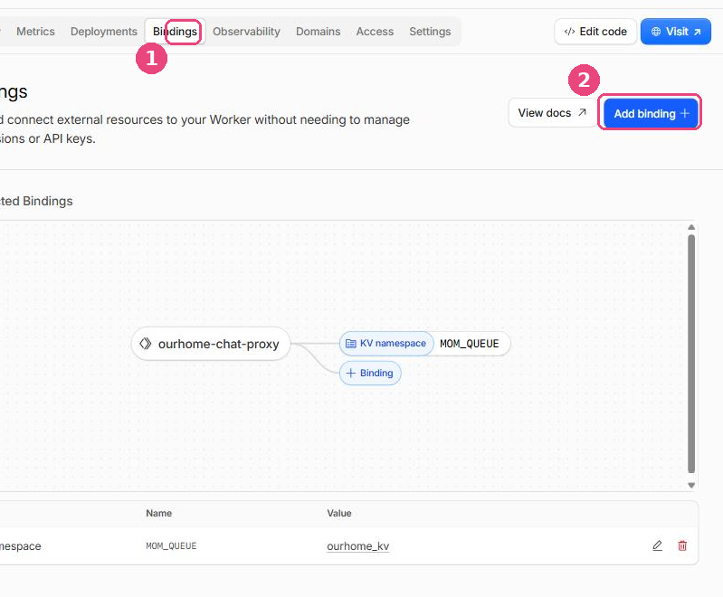
設定が終わると、下の表に「KV namespace / MOM_QUEUE」の行が出ます。
- 種類の一覧が出ます。1「KV namespace」を選んでから、2「Add Binding」を押します。
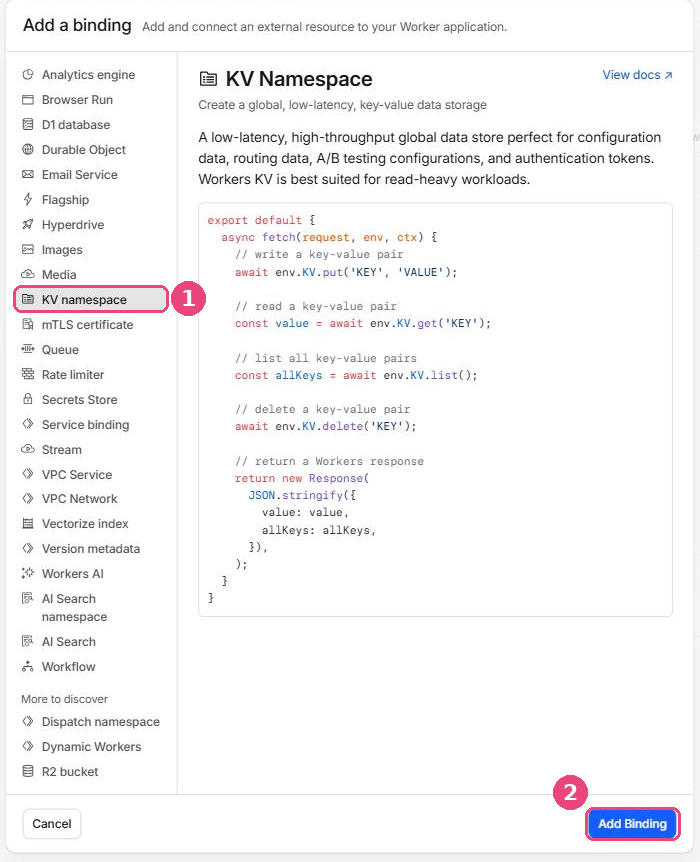
種類がたくさん並んでいますが、選ぶのは「KV namespace」だけです。
- 1「Variable name」に
MOM_QUEUE と入力します(つづりはこのとおりに。1文字でも違うと動きません)。2「KV namespace」欄で、先ほど作ったKVを選びます。3「Add Binding」を押して完了です。
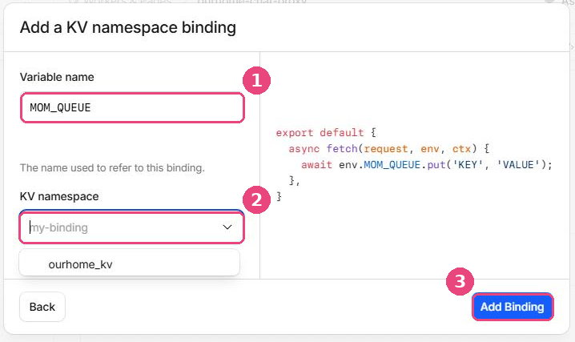
「Variable name」はプログラムがKVを呼ぶときの名前なので、決まった文字列です。
4-4. 1時間ごとの自動実行(Cron)を追加する
予定のリマインドなどを定期的に送るための設定です。
- もう一度 1「Settings」タブを開き、下へスクロールして「Trigger events」の中の「Cron triggers」を探します。2「+ Add」を押します。
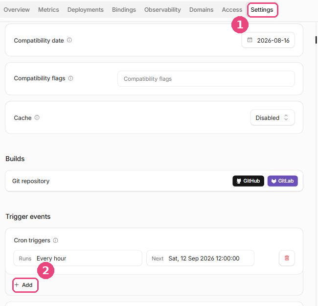
設定が終わると、この図のように「Runs / Every hour」と表示されます。
- 小さな画面が開きます。上部に「Schedule」と「Cron expression」の切り替えがあります。かんたんなのは「Schedule」のままで、「Execute Worker every」を Hour(s) の 1 にする方法です(=1時間ごと)。「Cron expression」に切り替えて
0 * * * * と入力しても同じです。最後に「Add」を押します。
- 設定が終わったら、WorkerのURL(
https://〇〇.workers.dev の形。「Overview」タブ上部や「Domains and routes」欄に表示されています)を控えておきます(これが手順5で使う「Worker URL」です)。
- LINE Developersコンソールに戻り、「Messaging API設定」の「Webhook設定」を開きます。2「編集」から、1「Webhook URL」に
Worker URLの末尾に/webhookを付けたもの(例: https://〇〇.workers.dev/webhook)を入れて保存し、3「Webhookの利用」をオンにします。
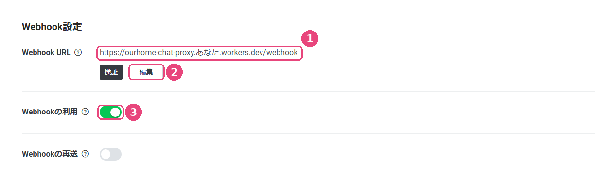
「検証」を押して成功が出れば、WorkerとLINEがつながっています。「Webhookの再送」はオフのままで構いません。
Step 5. アプリに接続情報を入力する
- お子様の端末で「まいにちサポート」を開きます。
- ホーム画面右上の「⚙️」ボタンをタップし、「🔌 通知の接続設定」を開きます。
- 「Worker URL」欄に、Step4で控えたWorkerのURLを入力します。
- 「合言葉(APP_PROXY_TOKEN)」欄に、Step4で自分で決めた合言葉を入力します。
- 「保存する」を押します。「✅ 設定済み」と表示されれば完了です。
Step 6. お父さん・お母さんを通知の宛先として登録する
ここまでの設定だけでは、「誰に」送ればいいかをWorkerがまだ知りません。お父さん・お母さんご本人が、それぞれ一度だけ次の操作をしてください。
- Step1で作った公式アカウントを、LINEで「友だち追加」します(QRコードは公式アカウント管理画面の「友だち追加」メニューから取得できます)。
- その公式アカウントのトーク画面を開き、お父さんは「おとうさん」、お母さんは「おかあさん」とだけ送信します。
- 「登録できたよ！」と返信が来れば完了です。これで、「お母さんだけ」「お父さんだけ」「二人とも」を選んでの通知が届くようになります。
これでLINEと通知の設定は完了です。うまく届かない場合は、Step2〜4で控えた値に入力ミスがないか(特にコピペ時の余分な空白・改行)をまずご確認ください。
つづいて手順3「カレンダーの連携」へ →
設定ガイドの目次にもどる ／ プライバシーポリシー